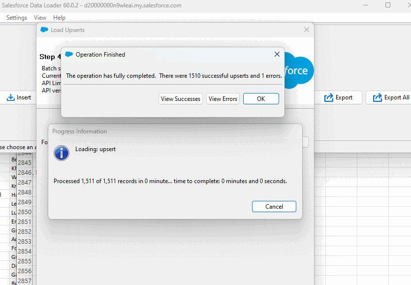
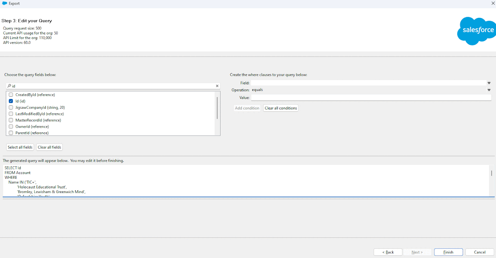
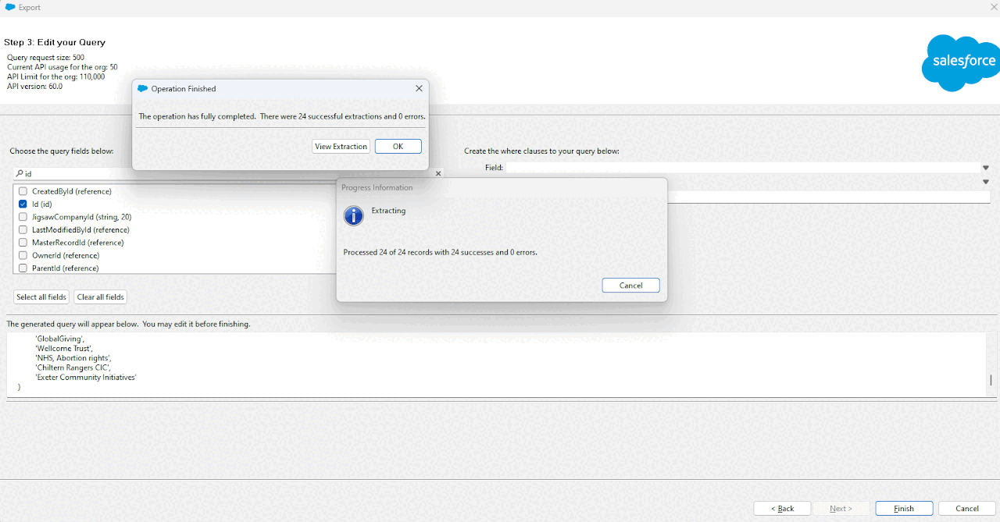

The problem
AkamaFund’s Salesforce org relied on legacy Workflow Rules and Process Builder automations. They were outdated, inefficient, and didn’t fit Salesforce’s modern automation framework.
What I built
- Automation migration: moved all legacy Workflow Rules and Process Builder automations to Flows.
- Custom apps and objects: built apps and objects around how the business actually works.
- Data migration and cleaning: led the migration and clean-up using Data Loader and SOQL.
- User training: ran targeted training sessions to get people using the platform.
What changed
20%
Increase in business process efficiency
55%
Of the user base adopting the platform
Project snapshots




